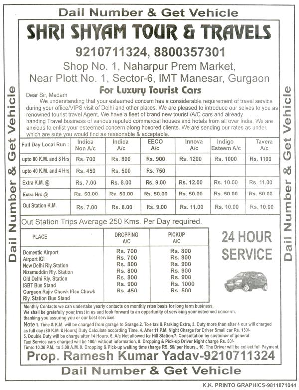

<?xml version="1.0" encoding="UTF-8"?>
<rss version="2.0"
	xmlns:content="http://purl.org/rss/1.0/modules/content/"
	xmlns:wfw="http://wellformedweb.org/CommentAPI/"
	xmlns:dc="http://purl.org/dc/elements/1.1/"
	xmlns:atom="http://www.w3.org/2005/Atom"
	xmlns:sy="http://purl.org/rss/1.0/modules/syndication/"
	xmlns:slash="http://purl.org/rss/1.0/modules/slash/"
	>

<channel>
	<title>Chronosynclastic Infundibulum &#187; english</title>
	<atom:link href="http://www.semanticoverload.com/tag/english/feed/" rel="self" type="application/rss+xml" />
	<link>http://www.semanticoverload.com</link>
	<description>The world through my prisms</description>
	<lastBuildDate>Thu, 07 Apr 2011 17:36:17 +0000</lastBuildDate>
	<language>en-US</language>
	<sy:updatePeriod>hourly</sy:updatePeriod>
	<sy:updateFrequency>1</sy:updateFrequency>
	<generator>http://wordpress.org/?v=3.5</generator>
		<item>
		<title>It&#8217;s Inglis; English is so last year&#8230;</title>
		<link>http://www.semanticoverload.com/2010/08/31/its-inglis-english-is-so-last-year/</link>
		<comments>http://www.semanticoverload.com/2010/08/31/its-inglis-english-is-so-last-year/#comments</comments>
		<pubDate>Tue, 31 Aug 2010 17:55:59 +0000</pubDate>
		<dc:creator>Semantic Overload</dc:creator>
				<category><![CDATA[humor]]></category>
		<category><![CDATA[india]]></category>
		<category><![CDATA[english]]></category>
		<category><![CDATA[flyer]]></category>
		<category><![CDATA[funny]]></category>
		<category><![CDATA[gurgaon]]></category>
		<category><![CDATA[haryana]]></category>
		<category><![CDATA[humour]]></category>
		<category><![CDATA[hunor]]></category>

		<guid isPermaLink="false">http://www.semanticoverload.com/?p=739</guid>
		<description><![CDATA[The post by Patrix on (an linking to a post on) Marathi English reminded me of a flyer that a good friend of mine  (who now lives in Gurgaon, India) had emailed to me for my amusement. The text of her email said, &#8220;Folks, here in Haryana, we are accustomed to language of the finest [...]]]></description>
				<content:encoded><![CDATA[<p>The <a href="http://www.ipatrix.com/3632/the-unofficial-official-marathi-english/">post by Patrix</a> on (an linking to a post on) <a title="Blog post on Marathi English" href="http://www.macmillandictionaryblog.com/marathi-english">Marathi English </a>reminded me of a flyer that a good friend of mine  (who now lives in Gurgaon, India) had emailed to me for my amusement. The text of her email said, &#8220;Folks, here in Haryana, we are accustomed to language of the finest quality. Here&#8217;s your first lesson in &#8216;Elegant English&#8217;&#8230; see attached.&#8221;</p>
<p>And here is the attached flyer [transcript follows]:</p>
<p><a href="../../../wp-content/uploads/2010/08/ElegantEnglish-Lesson1.jpg"></a></p>
<p>Transcript of the solicitation text:</p>
<blockquote><p>Dear Sir, Madam<br />
We understanding that your esteemed concern has a considerable requirement of travel service during your office/VIPS visit of Delhi and other places. We are pleased to introduce our selves to you as renowned tourist travel Agent. We have a fleet of brand new tourist/A/C cars and already handing Travel business of various reputed commercial houses and hotels from all over India. We are anxious to enlist your esteemed concern along honored <em>[sic]</em><sup>1</sup> clients. We are sending our rates as under, which are sute <em>[sic]</em><sup>2</sup> you would find as reasonable &amp; acceptable.</p></blockquote>
<p>So, did you figure out what exactly is being offered and how? :)</p>
<hr />
<div style="font-size: xx-small;">
<p>Footnotes:</p>
<p><sup>[1]</sup> I wonder if this was a typo or they are well-versed with American English.</p>
<p><sup>[2]</sup> I assume they meant &#8220;suit&#8221;.</p>
</div>
]]></content:encoded>
			<wfw:commentRss>http://www.semanticoverload.com/2010/08/31/its-inglis-english-is-so-last-year/feed/</wfw:commentRss>
		<slash:comments>1</slash:comments>
		</item>
	</channel>
</rss>
